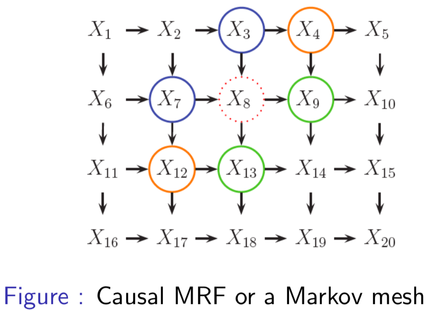
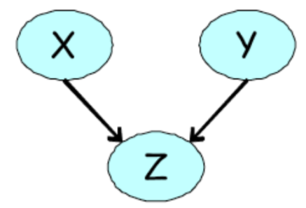
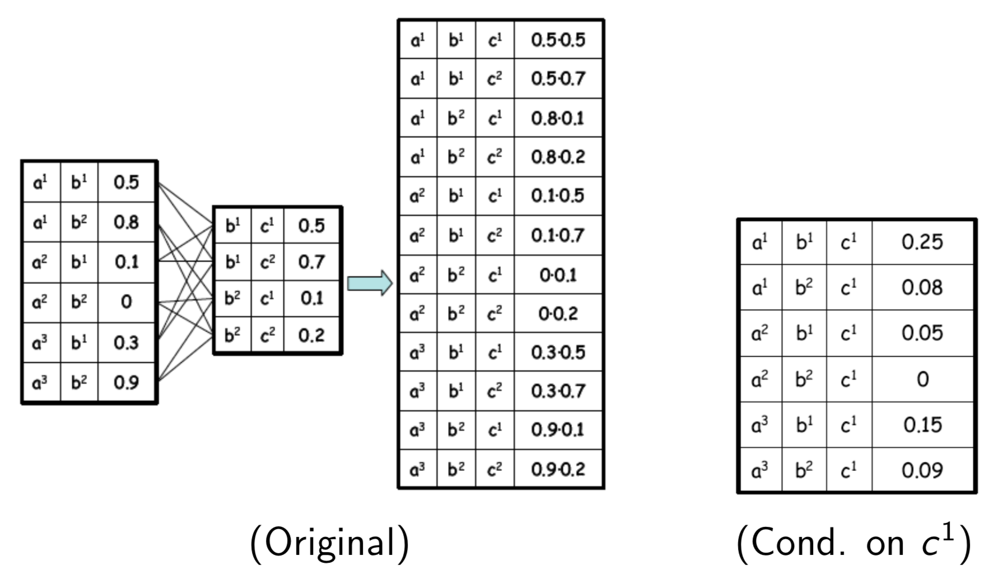

Week 4: Undirected Graphical Models¶
Assigned Reading¶
- Murphy: Chapters 19-19.5
Directed Graphical Models (a Review)¶
So far, we have seen directed acyclic graphical models (DAGMs). These models represent large joint distributions using local relationships specified by the graph, where each random variable is a node and the edges specify the conditional dependence between random variables (and therefore missing edges imply conditional independence). Graphically, these models looked like

The graph factorizes according to the local conditional probabilities
where x_{\pi_i} are the parents of node x_i.
Each node is conditionally independent of its non-descendents given its parents
Note
Recall that this is simply a topological ordering of the graph (i.e. parents have lower numbers than their children)
For discrete variables, each node stores a conditional probability table (CPT) of size k^n, where k is the number of discrete states and n the number of conditionally dependent nodes.

Example
The DAGM above has k^n = 2^{6} possible configurations.
Are DAGMs always useful?¶
For some problems, it is not always clear how to choose the direction for the edges in our DAGMs. Take the example of modeling dependencies in an image

our assumptions lead to unatural conditional independence between random variables. Take for example, the Markov blanket of node X_8
Note
The Markov blanket contains the parents, children and co-parents of a node. More generally, it is the set of all variables that shield the node from the rest of the network. I think the point of this example is that one would expect X_2 and X_{14} to be in the Markov blanket mb(8), especially given that X_4 and X_{12} are.
An alternative to DAGMs, is undirected graphical models (UGMs).
Undirected Graphical Models¶
Undirected graphical models (UDGMs), also called Markov random fields (MRFs) or Markov networks, are a set of random variables described by an undirected graph. As in DAGMs, the nodes in the graph represent random variables. However, in contrast to DAGMs, edges represent probabilistic interactions between neighboring variables (as opposed to conditional dependence).
Dependencies in UGMs¶
In DAGMs, we used conditional probabilities to represent the distribution of nodes given their parents. In UGMs, we use a more symmetric parameterization that captures the affinities between related variables.
The following three properties are used to determine if nodes are conditionally independent:
def. Global Markov Property (G): X_A \bot X_B | X_C iff X_C separates X_A from X_B
Note
That is, there is no path in the graph between A and B that doesn't go through X_C.
def. Local Markov Property (Markov Blanket) (L): The set of nodes that renders a node t conditionally independent of all the other nodes in the graph
where cl(t) = mb(t) \cup t is the closure of node t.
def. Pairwise (Markov) Property (P): The set of nodes that renders two nodes, s and t, conditionally independent of each other.
Note
G_{st} is a function that counts the number of edges between nodes s, t
where
Simple example¶

- Global: \{1, 2\} \bot \{6, 7\} | \{3, 4, 5\}
- Local: 1 \bot \text{rest} | \{2, 3\}
- Pairwise: 1 \bot 7 | \text{rest}
Image example¶

- Global: \{X_1, X_2\} \bot \{X_{15}, X_{20}\} | \{X_3, X_6, X_7\}
- Local: 1 \bot \text{rest} | \{X_2, X_6\}
- Pairwise: 1 \bot 20 | \text{rest}
Not all UGMs can be represented as DGMs¶
Take the following UGM for example (a) and our attempts at encoding this as a DGM (b, c).

First, note the two conditional independencies of our UGM in (a):
- A \bot C|D,B
- B \bot D|A,C
In (b), we are able to encode the first independence, but not the second (i.e., our DGM implies that B is dependent on D given A and C). In (c), we are again able to encode the first independence, but our model also implies that B and D are marginally independent.
Not all DGMs can be represented as UGMs¶
It is also true that not all DGMs can be represented as UGMs. One such example is the 'V-structure' that we saw in the explaining away case in lecture 3.

An undirected model is unable to capture the marginal independence, X \bot Y that holds at the same time as \neg (X \bot Y | Z ).
Cliques¶
A clique in an undirected graph is a subset of its vertices such that every two vertices in the subset are connected by an edge (i.e., the subgraph induced by the clique is complete).
def. A maximal clique is a clique that cannot be extended by including one more adjacent vertex.
def. A maximum clique is a clique of the largest possible size in a given graph.
For example, in the following graph a maximal clique is show in blue, while a maximum clique is shown in green.

Parameterization of an UGM¶
Let x = (x_1, ..., x_m) be the set of all random variables in our graph. Unlike in DGMs, there is no topological ordering associated with an undirected graph, and so we cannot use the chain rule to represent the joint distribution p(x).
Instead of associating conditional probabilities with each node, we associate potential functions or factors with each maximal clique in the graph.
For a given clique c, we define the potential function or factor
to be any non-negative function, where x_c is some subset of variables in x involved in a unique, maximal clique.
The joint distribution is proportional to the product of clique potentials
Note
Any positive distribution whose conditional independencies are represented with an UGM can be represented this way.
More formally,
A positive distribution p(x) > 0 satisfies the conditional independence properties of an undirected graph G iff p can be represented as a product of factors, one per maximal clique, i.e.,
where \mathcal C is the set of all (maximal) cliques of G, and Z(\theta) the partition function, defined as
The factored structure of the distribution makes it possible to more efficiently do the sums/integrals needed to compute it.
Lets see how to factorize the undirected graph of our running example:
Representing potentials¶
Recall how we parameterized DAGMs of discrete random variables by using conditional probability tables to represent the possible configurations of each node. In this case, the parameters were a valid probability distribution (i.e. the probabilities of the possible configurations summed to 1).
In UGMs, we do something similar. If the variables are discrete, we can represent the potential (or energy) functions as tables of (non-negative) numbers
where

Warning
Why the switch from \psi to \phi here?
It is important to note that these potentials are not probabilities, but instead encode relative affinities between the different assignments. For example, in the above table, a^0, b^0 is taken to be 30X more likely than a^1, a^0.
Factor product¶
Given 3 disjoint sets of variables X, Y, Z and factors \psi_1(X, Y), \psi_2(Y, Z) the factor product is defined as:

From the factor product, we can make queries about the marginal probabilities, e.g.
enumerating all marginal probabilities in a table for our running example, we get

Tip
To get the normalized marginal probability, divide by the partition function Z(\theta) = \sum_x \prod_{c \in \mathcal C} \psi_c(x_c | \theta_c)
to compute the marginal probability of a single variable in our graph, e.g. p(b_0), marginalize over the other variables
we can also make queries about the conditional probability. Conditioning on a assignment u to a subset of variables U can be done by
- Eliminating all entries that are inconsistent with the assignment
- Re-normalizing the remaining entries so that they sum to 1
For example, conditioning on c_1
from this sum, take only factors consistent with the assignment c^1, re-normalize remaining entries and then sum.

Error
I don't fully understand this section. Seems to be a disconnect between lecture notes and lecture slides. Re-visit, clean-up, and if I still don't understand go to office hours.